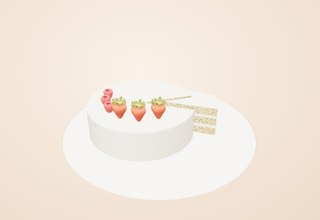

Какой у вас
повод?
Начнём с события. А вкус, форму и последнюю ягоду вы выберете сами.
ВЫ ПРИДУМАЛИ
МЫ СОБРАЛИ
МЫ СОБРАЛИ

День рождения
Ванильный торт для общего стола
Три шага
до вашего торта.
-
01
Вкус
Выберите рецепт, который хочется попробовать.
-
02
Характер
Добавьте ярусы и совместимые украшения.
-
03
Последняя деталь
Рассмотрите композицию и сохраните вариант.
Выбранная композиция откроется в 3D. Меняйте детали, вращайте модель и сохраняйте вариант.